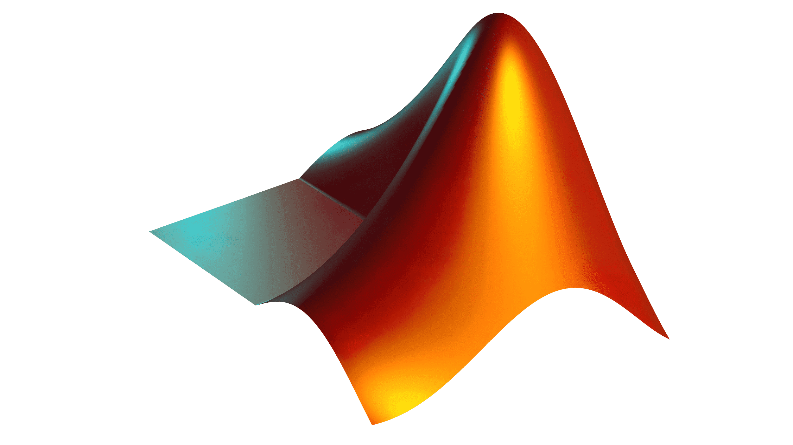

Technical Skills
Microsoft office

MATLAB

Python
Julia
SQL

With a background in energy and a focus on portfolio analysis during my PhD, I’ve shifted into the world of FinTech product development, driven by a passion for innovation. Specializing in quantitative portfolio analysis, risk modeling, and research, I’ve leveraged tools like MATLAB, Python, and Julia to work extensively on robo-advisors, structured products like fixed coupon notes, and various financial instruments. Despite this shift, I still hold a deep love for renewable energy, project financing, and energy source planning, and continue to explore these areas whenever possible.
Microsoft office
MATLAB
Python
Julia
SQL
Asian Institute of Technology, 2016 - 2020
VNIT Nagpur, 2011 - 2013
NIT Raipur, 2006 - 2011

Developed a comprehensive robo-advisor strategy and built quantitative models for asset allocation and risk analysis, using techniques like CVaR to optimize risk management across portfolios.

As a product manager, I worked to make wealth management products more accessible, including developing robo-advisors, alternative investments, structured products, and smart cash offerings for diverse clients.
Led projects focused on energy modeling, policy studies, and resource planning, applying financial theories such as Markowitz mean-variance, Black-Litterman, and CVaR to optimize renewable energy investment.
Developed an innovative index combining economic and power parameters of energy sources to define risk and reward, utilizing fuzzy logic. This work was published in the high-impact journal Renewable Energy.

Designed and compared three different controllers—PID, Fuzzy, and LQR—for a magnetic levitation system, presenting the findings at an IEEE conference with real-time simulation models.
Cited by: 29 | Year: 2016
AC Unni, AS Junghare, V Mohan, W Ongsakul
2016 International Conference on Cogeneration, Small Power Plants and …
Cited by: 25 | Year: 2018
S Tiwari, A Bhatt, AC Unni, JG Singh, W Ongsakul
2018 International Conference and Utility Exhibition on Green Energy for …
Cited by: 12 | Year: 2020
AC Unni, W Ongsakul
Renewable Energy 148, 665-673
Cited by: 7 | Year: 2015
V Mohan, JG Singh, W Ongsakul, AC Unni, N Sasidharan
Procedia Technology 21, 15-23
Cited by: 4 | Year: 2018
AC Unni, W Ongsakul, S Tiwari
2018 International Conference and Utility Exhibition on Green Energy for …
Cited by: 2 | Year: 2014
AC Unni, A Junghare
International Journal of Recent Technology and Engineering (IJRTE) 3 (1)
Cited by: 1 | Year: 2022
AC Unni, W Ongsakul, N Madhu M.
Electrical Engineering 10 (10.1007/s00202-022-01618-0)
Cited by: 1 | Year: 2022
AC Unni, W Ongsakul, N Madhu M.
Renewable Energy for Sustainable Growth Assessment
Cited by: 1 | Year: 2019
S Tiwari, AC Unni, R Rajanivedha, JG Singh, W Ongsakul
2019 Innovations in Power and Advanced Computing Technologies (i-PACT) 1, 1-7
If you want to know more about my experience and skills, feel free to download my resume!
Download My Resume (PDF)You can reach me at: arjuncrevathi@gmail.com